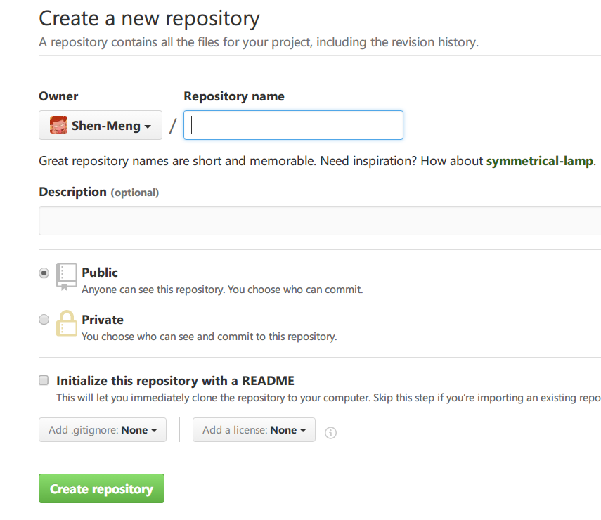

前言
动机
折腾了好久，终于可以写第一篇博文了。
为什么要写博客？对于我来说，基本就是以下几点原因：
- 记录生活
- 整理、总结学习过程
- 提高说清楚事情的能力
- 积累知识
- 培养一个人专注做事的能力
简介
我的博客是用Github Pages和Hexo搭建的。网上教程很多，不过官方文档还是坠吼的。
这一篇博文就用来记录我搭建的过程（搭建环境为Windows）。
Github Pages
Websites for you and your projects.
Hosted directly from your GitHub repository. Just edit, push, and your changes are live.
Github Pages是用来介绍托管在github上的项目的静态网页，可由用户自己改写。
Hexo
快速、简洁且高效的博客框架
hexo是一款基于Node.js的静态博客框架，可以十分方便地生成网页托管在Github上。
准备
安装 Node.js
下载安装 Node.js
安装 Git
下载安装 Git
Markdown 编辑器
Markdown是一种轻量级的「标记语言」，简洁优雅，花十分钟就能大概熟悉Markdown（认识与入门 Markdown）。
Windows下最有名，功能最强大的是MarkdownPad。我现在在用Haroopad，感觉还不错，还有一个开源的Typora也不错，界面比前两者要简洁优雅。
Github 相关配置
注册Github并且用SSH Key配置远程仓库。详细可以参考Git使用之设置SSH Key。
安装 Hexo
使用Git bash或者其他命令行工具，输入：
开始使用
创建 repository
进入Github首页，点击页面中央的Start a project或页面右下角「New Repository」，进入以下界面。

注意，假如你的用户名是XXX，那么你创建的repository的名字必须是XXX.github.io。命名之后Create repository即可。
本地部署
在自己想要的位置创建本地文件夹，为了不让Git出现莫名其妙的错误，路径中最好不要有中文。在要创建的位置右键打开Git Bash，或者是打开Git Bash后cd切换到该路径。接着输入：
而我在执行hexo init命令后出现了错误，Git Bash报错：
这就十分奇怪了，错误信息中的C:\Computer Program\Git\Git是我Git的安装位置，Hexo肯定不是安装在这个位置，Git Bash怎么会去读取这个位置下的Hexo命令呢。网上也没有能解决我这个问题的方法。后面我找到了三个方法解决该问题：
1.一头雾水又一脸懵逼的我索性逆向推导，既然Git Bash说我在该路径下缺少Hexo程序，我就把Hexo安装好的文件放到这个路径下。npm默认安装Hexo的路径是C:\Users\XXX\AppData\Roaming\npm\node_modules，进入该路径，复制hexo-cli，在提示的C:\Computer Program\Git\Git路径下新建node_modules文件夹，然后把hexo-cli粘贴进去，再使用Git bash就OK了。我觉得可能因为装的是hexo-cli，接着又npm install -g hexo，但是使用Git Bash还是报错，只不过报错信息中的hexo-cli换成了hexo，解决方法同理，就是复制hexo文件夹到报错路径下。
2.后来经过我的尝试，发现只有Git Bash会出错，其他命令行工具是可以用的。因此，可以换用系统自带的CMD或PowerShell，或者使用Git CMD，Node.js的命令行工具也可以。
3.在建站完成后，我又发现了一个方法，就是以管理员身份运行Git Bash，能完美解决这个问题。不过我还是不清楚为什么会出现这种情况。
Hexo init初始化之后，就可以生成静态网页了。首先熟悉一下常用的命令：
执行命令：
接着用浏览器访问http://localhost:4000/，能看到一个初始的博客，hexo3.0之后使用的默认主题是landscape，Hexo会自动生成一篇题为hello world的文章，当然这个博客只是在本地的，只有自己电脑上才能看到。有了这个预览功能，切换主题调试特性什么的特别方便。
将本地文件部署到Github Pages
上面我们只是在本地自娱自乐，接来下就是关键的一步，把在本地的博客部署到Github Pages上，然后就可以直接通过互联网访问了。
在根目录的config.yml中，使用编辑器在该配置文件最下方作如下修改：
注意，冒号后面有空格。而且在发布前需要先安装一个扩展：
不然会出现错误信息：
然后就可以执行命令：
这样博客就已经发布在Github Pages上了。
直接在浏览器中访问https://XXX.github.io/就可以看到自己的博客了。
主题更换及配置
在Hexo中有两份主要的配置文件，名称都是config.yml。 其中，一份位于站点根目录下，主要包含Hexo本身的配置；另一份位于根目录的主题文件夹themes下，这份配置由主题作者提供，主要用于配置主题相关的选项。
在Hexo主题官网中，有几十个精美的主题，选择好主题之后，进入该主题的Github Repository，使用终端将主题clone到本地。例如，我选择了NexT这个主题，在终端下输入：
然后使用该主题，用编辑器打开根目录的config.yml，找到theme字段，并将其值更改为next。
接着执行命令：
用浏览器访问http://localhost:4000/，在本地预览主题。
有关主题的更多配置可以访问NexT官网，而如果使用是其他主题，可以直接看这个主题项目在Github上的介绍文件。
发表文章
在终端上执行命令：
然后在根目录下的\source\_post文件夹中用Markdown编辑器打开articleName.md，会看到如下界面：
需要注意的是，分类及标签名XX和符号-之间是有空格的，这是我血与泪的教训，没有空格的后果会很严重！
一般文章默认是没有分类的，这时候就得先进入站点根目录，接着输入：
在根目录的source文件夹下会生成名为categories的文件夹，里面有个categories.md文件，打开后编辑其中type，编辑为：
那么下一次新建文章，文章开头部分就会自动显示categories:部分，就能够自己为文章创立、编辑分类了。不过首先要确保在根目录的themes文件夹下，所使用主题的_config.yml文件中，已添加使用categories于menu，如下：
添加标签的方法同理，只不过是把categories换成了tags。
写完文章之后，$ hexo g命令生成静态文件；$ hexo s在本地预览效果（可选）；接着hexo d部署到Github即可，最后就可以访问https://XXX.github.io/可以看到刚写的博文了。
总结
生命不止，折腾不息。花了许多时间和精力，总算是搭建好了一个初步的博客，我还是得努力提高自己的知识水平，有关主题的进一步修改配置和其他功能的实现留待以后再写了，很惭愧，就做了一点微小的工作。